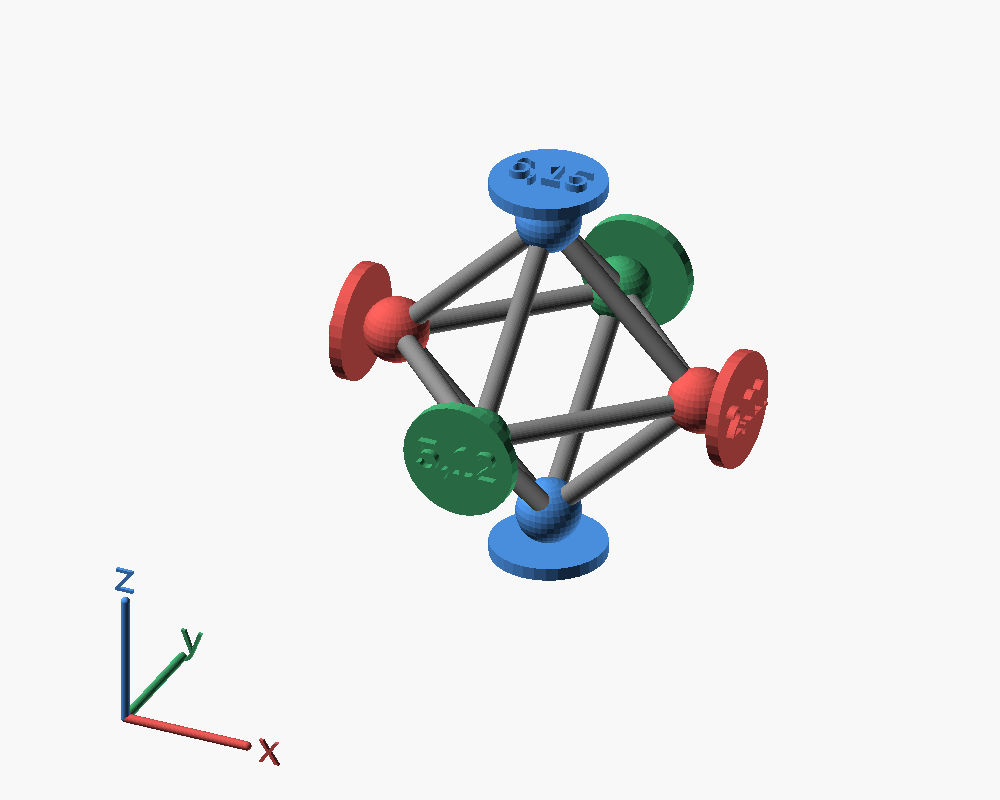

One box-kite as an octahedron
canvas2d_Pick a strut; six assessors on ±x, ±y, ±z; click a vertex for the four diagonals it annihilates; the {0,4,4,4,6,6} spectrum.
All 42 assessors: seven octahedra
canvas2d_The seven kites at seven corners of a cube, e₀ at the eighth; 84 edges, none between kites. The gluing is the engine's open item and is not faked.
Fano plane and PG(3,2)
canvas2d_strut = a XOR b: a strut is a Fano point and its three lines are the octahedron's three axes; the 15 / 35 / 15 geometry on the sedenion indices.
The associator
canvas2d_A 16 × 16 map of where the product bends: 1848 of 4096 triples, each by exactly 2; the octonion block is not flat (168 of 512).
The group 1344 = 8 × 168
canvas2d_Its action on the seven kites, the 168 permutations by cycle type, the 8 sign changes, orbit and stabiliser, and the non-split result.
OpenSCAD companion
scadA printable octahedron with the six assessors of any strut labelled on its vertices: box_kite_octahedron.scad (STL and renders beside it).

Code flow chart
svgThe call graph of the engine in ISO 5807 symbols, derived from the source by tools/flowchart.py: box_kite.svg.